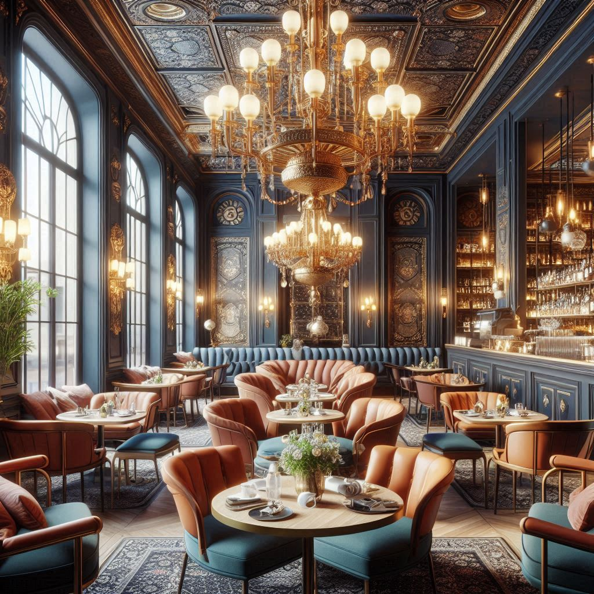

At DAISI, our story begins with the timeless charm of Old Tbilisi and the warmth of Georgian hospitality. “Daisi,” meaning sunset in Georgian, symbolizes those serene moments when the day slows down and everything feels right. Inspired by this feeling, we created DAISI as a place where tradition and relaxation meet.
Located in the heart of Tbilisi's historic district, our café-restaurant offers more than just food—it's an experience. Every dish is crafted with care, blending authentic Georgian flavors with a touch of modern comfort. From the rich taste of khachapuri to the warmth of homemade stews, we bring you the essence of Georgia in every bite.
But DAISI isn't just about what's on your plate. It's about the atmosphere—the soft light, the cozy corners, the friendly faces. Whether you're catching up with friends, celebrating a special moment, or simply enjoying a quiet evening alone, DAISI welcomes you with open arms.
We invite you to come in, relax, and let the story of DAISI become part of yours. Experience the heart of Georgia, where tradition and tranquility come together.
.jpeg)
.jpeg)

Go back to main page